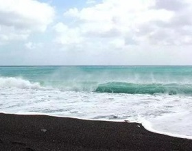
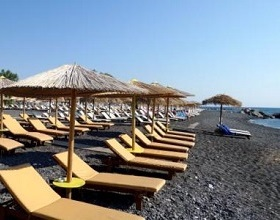
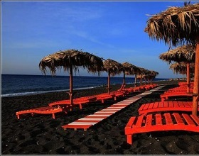
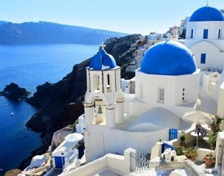
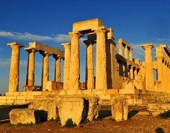
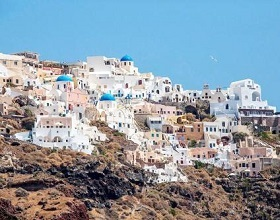
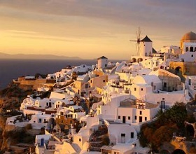
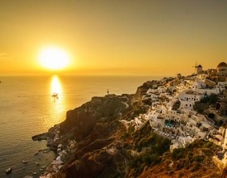

morly旅游网
圣托里尼岛(Santorini)古名为希拉(Thera)，后来为纪念圣·爱莲（SaintIrene），于1207年被改为圣托里尼。圣托里尼（Santorini）是在希腊大陆东南200公里的爱琴海上由一群火山组成的岛环，圣托里尼岛环上最大的一个岛也叫圣托里尼岛，别名锡拉岛（Thira）。圣托里尼岛位于基克拉泽斯群岛（Cycladesislandcomplex）的最南端，岛屿面积为96平方公里，海岸线长69公里，人口约14000余人，多为希腊人。圣托里尼岛由3个小岛组成，其中2个岛有人居住，中间的1个岛是沉睡的火山岛。历史上这里曾发生多次火山爆发，以公元前1500年最为严重，岛屿中心大面积塌陷，原来圆形的岛屿呈现了现在的月牙状。圣托里尼岛的首府是费拉市，位于岛的西岸。
卡玛里海滩
卡玛里海滩距离费拉市较近，是一个长方形黑色沙滩。圣托里尼岛独特的火山地质造就了卡玛里独特的黑色沙滩。看起来，沙是黑的，水也是黑的。黑色海滩名气不小，海水清凉、干净，据说还有美容作用。
卡玛里海滩方圆500米，聚集了几十家旅馆，从最高档的五星级酒店到民舍都有，可见其热闹的程度。平行于海岸的海滨大道上餐馆、酒吧、纪念品店、运动用品店林立。
如果说，伊亚是文人雅士之所爱，那么卡玛里就是游人夜生活的天堂。入夜之后，这里的酒吧、餐馆热闹非凡。Venus、Valentino′s Mango、Trapical Beach等一家家音乐酒吧和餐馆仿佛让人置身于一座浪漫的不夜城。
 柏莉萨沙滩
柏莉萨沙滩是圣托里尼岛著名的海滩之一，位于该岛的南面。海滩最大的特色是沙全是黑色的，实际上，该岛的沙滩沙粒都是黑色的火山灰粒。
Pykgos是柏莉萨海滩和菲拿市之间的一个风景点，从菲拿乘巴士20分钟可到。这是一个堡垒群落,雪白的教堂沿山脚至山顶而建，教堂前有钟塔和钟楼，景色十分迷人。爬上教堂顶，可眺望近处的葡萄田野和悬崖景色。
 阿科罗提利遗址
在岛的南面，这座曾被火山灰覆盖的城市于1967年被发掘出来。
阿科罗提利遗址的历史可追溯到前16世纪，考古学家在这里发现了二三层楼高的建筑群，墙壁分隔成许多房间。发现有仕女房，故认为当时已有男女不同房的观念。还有复杂的水渠系统。阿科罗提丽遗址被挖掘出来时，考古学家找不道任何骨骸和珠宝，出土的大酒瓶中有葡萄酒渍。遗址中最精彩的是墙上的壁画。由于大量火山灰的覆盖，3000多年前的阿科罗提利壁画表现了该城居民当时的生活情景，具有高度的艺术水平，其中有“春之图”、“打拳少年”、“渔夫”、“航海图”等作品。这些最具历史价值的真迹原作保存在雅典的国立考古博物馆。
纳亚·卡美尼岛被因火山喷发而分开的小岛所包围，从这里四面望去，可以看到其它小岛。该岛附近的海水是绿色的，非常漂亮。船开往附近的Palea Kameni,那里就是著名的海水温泉，游客可以从中感受海水从冰凉到温暖的变化，愈往里温泉水色渐变成橘色。
 伊亚
伊亚镇建立在海边的悬崖上，是圣托里尼岛第二大镇，被认为是世界上观看落日最美的地方。每天都会有成千上万的来自世界各地的游客聚集在这里享受落日落的余晖，在太阳落下的那一瞬间，时间仿佛停滞了，太阳慢慢消失在地平线，镇上却突然变得宁静安详。每个人脸上都突然带上微笑，安静的送走夕阳的最后一抹余晖，每个人都陶醉在这人间美景中，大家都会情不自禁的鼓掌，他们被大自然的美景折服了。
伊亚以日落景色最迷人。当黄昏，游人便会纷至沓来，威尼斯城堡或风车总是人满为患。因为在这里，才能欣赏到圣托里尼岛最著名的“日落爱琴海”的美景。 与费拉市一样，伊亚在临海的断崖上。那些建在悬崖上的蓝顶教堂与彩色小屋十分突出。这里也有无数精致的白色房屋，还有传统的希腊式风车，在柔和的夕阳照耀下令人迷醉。伊亚是费拉市西北尽头的一个美丽城镇，位于圣托里尼岛北面，从费拉市可乘巴士直达。爱悠闲宁静的人不妨在这里多住几天。
 内容整理至网络，如有侵权，请联系我们！1255394075@qq.com